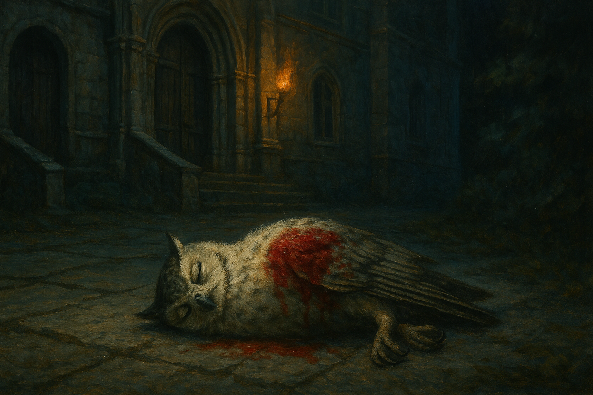

Chapter 1: Mysterious Bites
The Gift from Alfenor


The Gift from Alfenor
15048.11.17
走入漆黑的地下室，帕拉丁只能跟依靠直覺跟隨著安娜。不久後，他看見光線從一扇門內竄出，帕拉丁趕緊跟上，進到了門內。
這個房間有點像是個實驗室和辦公室的綜合體。安娜坐了下來，也示意帕拉丁在他面前的座位坐下。經過安娜的說明，他表示自己需要帕拉丁幫點小忙。眼看自己也沒有更好的選擇，帕拉丁點頭同意。安娜從位子底下取出了一個大甕，並請帕拉丁將手伸出。接著，安娜拿起刀子，從帕拉丁的手掌用力一刺，鮮血汨汨流出。隨著血不停的流，安娜念起咒語，甕內的血量快速增加，不久後都快要裝滿了，安娜便讓帕拉丁止血並處理傷口。接著，安娜拿了較大的四個玻璃瓶，分別將原本用小瓶子裝的黏液倒入大玻璃瓶，並添加足夠的血水進去混合。帕拉丁並不清楚安娜到底在做什麼事情，也不知道做完以後會有什麼成果，只從安娜那裡問到，接下來似乎需要花幾週的時間。
接下來的一兩週內，帕拉丁和安娜待在實驗室內，帕拉丁看著安娜的實驗，而安娜也花了不少時間研讀書籍。在帕拉丁表現出好奇後，安娜便和帕拉丁簡單說明了他正在研讀的草藥學，並翻出了一本普通語版本的，送給了帕拉丁。帕拉丁也利用這幾天的閒暇時間，多少增進了自己對草藥、醫療相關的專業知識。
隨著缸子越換越大，裡面的液體形色更趨迷幻，然後某一天，安娜將他們放到了身後的木櫃內並鎖了起來。接下來的幾天，兩人就是看書，吃麵包，休息，沒有離開過實驗室。
在缸子被取出木櫃後的某一天早上，帕拉丁被孩子的吵鬧聲吵醒，猛然一看，四個年幼的小孩子正在嬉鬧著。帕拉丁驚詫地看著安娜，才發現他似乎真的把他的夥伴們復活？再製？還是不知怎麼重新生出來了。
經過一天，孩子們長成少年少女，開始對事情感到好奇，以及充分的表現自己的各種情緒。圖伊特對安娜研讀的草藥學也很有興趣，在他的要求下，安娜讓他看了看自己閱讀的妖精語版本的原著，以及帕拉丁閱讀的普通語版。圖伊特發現了妖精語版的封底內頁，似乎簽了一個名，阿爾芬諾。安娜表示那是他的祖先，這些技術都是他的祖先傳承下來的。另外，在帕拉丁的解釋下，少年少女冒險者們也了解了在這段時間到底發生了什麼事。
15048.12.01
又過了一天，這幾個少年少女已快速成長成帕拉丁所熟知的年紀了，而且幸好，他們的記憶也都完好如初。然而，安娜卻消失了，實驗室內的櫃子都鎖了起來，看起來沒有留下什麼有用的東西。
經過了討論後，大家決定離開實驗室，回到地面。走上回到一樓的梯子，原本被鎖上的門現在可以輕鬆推開了。客廳的地上，冒險者們的背包被好好地放置著，裡面除了錢幣以外，東西都存放的好好的。而地上的一張紙條，上面用妖精與寫著：再會。
冒險者們在鎮長家進行簡單的探索。圖伊特在鎮長辦公室找到了他過去使用的手杖，突然發現這把手杖似乎裡面藏了一把長劍，上面還抄寫了月神教的禱詞。
冒險者們走向當初鎮長介紹的「貴重儲藏間」，並將門鎖解開。用力將門扯開，屍體排山倒海落了出來。冒險者們感到驚詫，隨即也看見了鎮長的屍體。經過檢查後，他們發現屍體上都有被蜘蛛咬過的傷口。同時，冒險者們腦中浮現了蟲子爬竄的聲響，他們也發現自己身上似乎浮現了貌似蜘蛛網的印記（伊努左側後腰、圖伊特左側肩膀後方、華生右小腿、蘇加魯頸後），像血管一樣向外展開，就連帕拉丁的身上也有（右手食指頂端）。伊努的印記似乎流出了點黑色的油水，不過在他用火在傷口上處理後，油水沒有再滲透了，伊努腦中蟲子爬竄的嘈雜聲似乎突然中止了。在華生的操作下，冒險者們向死去的鎮長問出了點資訊，似乎這些傷口很久以前就存在了。同時，圖伊特也向他的神問出了一個與蜘蛛相關的小宗教，而他們所信仰的神，叫蜘蛛王阿爾芬諾，而他們身上的印記，似乎是種詛咒。
在討論後，冒險者們決定讓伊努把這受詛的房子給燒了。冒險者們在空蕩蕩的瑟巴諾走著，曾經的惡棍之都，現在一個人都沒有了。屍體也不知怎地被清空了，而殘破的房子也沒有被修復。
冒險者們離開了瑟巴諾，決定回到麥克嵩去。花了不少時間，麥克嵩的城門就在眼前。入城後，帕拉丁拿起紫羅蘭給他的勳章，卻只從衛兵口中得到了「紫羅蘭在這裡已經沒有影響力了」的噩耗。眾人討論後，決定去找曾經幫助過帕拉丁不少忙的月先生。
月先生的辦公室派頓事務所看起來比印象中還要破舊不少，甚至連窗戶都破了。冒險者們走入了辦公室內，深夜的室內，裡面一個人都沒有，只有桌上留有一封信。
「親愛的朋友們，當你們看到這封信時，我已經不在了，不過這是我和月神做的交易，所以我也願意承受。不能再次進到妖精荒野那個好地方很可惜，但是在麥克嵩我也做了很多讓我感到滿意的事，很值得。同時，我也因此能認識不少有趣的人，包括你們。
你們的朋友們都回到他們原本的地方去了，紫羅蘭女士也和弗列里夫婦回寇林菲爾德去了。希望你們不要擔心，也希望你們往後的冒險都能很順利。
能認識你們，是一件很開心的事。
再見了，芬尼爾要帶我走了。
派頓(月先生)」
冒險者們紛紛找了辦公室內舒服的位子休息，他們很快就入睡了。
而在夢中，一個低沉的男聲伴隨著蟲子竄動的聲響，似乎呢喃著：「我們終於見面了」。
15048.12.02
一早醒來，帕拉丁發現他的夥伴們都還在熟睡中，其中，圖伊特、華生，以及蘇加魯似乎都睡得不太安穩。不久後，除了華生外，大家都陸續醒來了。大家討論著今天該去哪裡，最終決定先前往皇宮圖書館，尋找關於阿爾芬諾相關的知識，接著再嘗試去見新任國王，確保帕拉丁爵士的正當性。
在等待華生清醒的時間，圖伊特翻閱了月先生的辦公室。找到了一本似乎是月先生的日記。上頭紀錄了十幾年前開始月先生的日常，而筆記本停在了11/12，似乎才剛開始寫，就停了下來。
蘇加魯也在辦公室找到了一把非常小的鑰匙，小到不可能用來打開這間辦公室的門鎖。這把鑰匙甚至做工精細，上面還有貼上金箔，還寫著他看不懂的文字。
在華生醒來後，眾人便決定前往圖書館去。圖伊特向大家表示自己知道該怎麼去，但伊努跑得很快，似乎也胸有成竹。在伊努的帶領下，大家來到了麥克嵩王宮花園。
在花園中，帕拉丁看見了一位熟悉的身影，蘿琳，但他選擇假裝沒看見。反之，蘿琳趕緊跑了上來，向帕拉丁搭話，想探知龍恩的行蹤，但帕拉丁卻假裝根本不認識他，蘿琳只好沮喪地轉頭離開。伊努見狀，朝著遠去的蘿琳喊道，如果願意幫忙他們，伊努可以透露關於龍恩的消息，並同時告訴蘿琳他知道龍恩在與他們分別前，正要前往多倫維爾。蘿琳聽見了一絲希望，便折了回來。
在伊努的交涉下，蘿琳順利的帶了他們進入王宮圖書館。大家約好一小時後在圖書館的大廳見，接著大家就各自去不同地方尋找他們想得到的資料。
蘇加魯才剛進來不久，就因為民眾檢舉被他騷擾，而被衛兵約談，最終因為不願意將武器交給衛兵保管，被請離圖書館外等待。華生試圖和一位年長的志工談話，最終得到的結果可信度卻不太高，最後他也先離開了圖書館，在外面與蘇加魯一起等待。
帕拉丁試著想和服務台的員工詢問關於新任國王上任後麥克嵩的近況，被員工請去旁邊休息區找一位看起來年紀比紫羅蘭還要大個十五歲的阿桑聊。阿桑自稱叫伊芙，似乎對麥克嵩的近況頗有觀察與想法，也很樂於有帕拉丁這個聊天的對象，他甚至自己跑去圖書館辦公室內請人幫他們準備茶水。在聊了一段時間後，帕拉丁大致了解到，新任國王似乎是個比他還年輕的少年，剛上任的這段期間似乎沒做什麼事，但因為長得十分好看，受到不少女子的喜愛。前任國王並沒有死亡，但是退位後卻再也沒有人見過他了。在新任國王上任前，似乎也從未有人聽說過前任國王有個兒子。一切都讓人感到疑惑。
圖伊特和服務台詢問了關於蜘蛛王的相關書籍，被引導到了童書區去。他看見了一個小孩正在邊唸邊看一本《森林裡的蜘蛛王》，於是便湊到小孩背後聽看。透過這本童書，圖伊特得知了童話中的蜘蛛王阿爾芬諾似乎是住在一座神秘森林內。祂十分討厭人類，只要有人類闖進森林中，就會把他的頭咬斷，然後把身體當作戰利品展示。後來，為了剷除更多人類，蜘蛛王更自己離開森林，到人類居住的地區獵捕人類。最後，一群冒險者成功的把阿爾芬諾趕走，但是祂一定還會再回來。
伊努找了自然類的區域，想針對蜘蛛尋找相關知識，但沒有得到太有用的資訊。不過，他找到了一本看不懂文字的書籍。帶著這本書，伊努回頭到服務台，向櫃檯詢問這本書。櫃檯人員發現這本書似乎沒有圖書館的標記，帶著書去辦公室詢問後，表示這本確實不是圖書館內的館藏，他便在伊努的面前自己將書給收起來了。伊努也想將這本書佔為己有，卻不被櫃檯人員允許。
離開服務台後，伊努和圖伊特在宗教區相遇，試圖繼續搜尋有用的知識。圖伊特找到了一名看起來比較資深的圖書館員，透過心電感應向他詢問是否能找到關於蜘蛛王阿爾芬諾相關的書籍，館員回應他，這個區域的書應該沒辦法滿足他們的需求，同時，他默默地帶領著伊努與圖伊特，離開宗教區，從一處牆壁的暗門推了開來，門內，是向下的樓梯。
在伊努與圖伊特走下樓後，圖書館員帶領著他們走到了地下室數間特殊館藏間中的其中一間，邀請他們進去。館員從口袋拿出火柴，將火點在提燈內，並將充足的提燈分配給了伊努與圖伊特，然後帶他們到了一個角落，告訴他們蜘蛛王相關的知識，可以在這邊找到，接著他便回到門口等待。看著書，圖伊特得知阿爾芬諾似乎不是單獨一隻妖精化身的，而是一群妖精對人類的恨意的集體意志，灌入單獨一隻妖精的軀體。他思考著，卻突然聽見了他腦中傳出了阿爾芬諾的聲音。阿爾芬諾和他展開了對話，甚至強致將伊努也拉入了這場心靈對話，也同時展現了自己強大的能力。然而，在他們身上的「詛咒」，似乎是他的手下的意思，並不是他親自決定的。阿爾芬諾也對自己該對冒險者們做什麼，還沒拿定主意。在充滿了未知的情況下，阿爾芬諾向兩人道別，而同時，他們也發現帶著他們來到地下室的圖書館員，說著與他們腦中聽到阿爾芬諾說的話同步著，然後嘎然而止。圖伊特檢查了一下，發現圖書館員的身體已經乾癟了，就如他們所查到的書上所寫的，阿爾芬諾殺死的人，都會變成乾屍。
小心繞過化成乾屍的館員，兩人離開了地下室，回到了圖書館大廳，看見了蘿琳和帕拉丁兩人。與伊努打聽到了那本被櫃檯摸走的神秘書籍，圖伊特透過恐嚇的方式，將書拿到手了。雖然不知道這本書是用什麼語言寫的，圖伊特依舊讀懂了他。裡面似乎是阿爾芬諾歷代的祭司，用來記錄詛咒的對象詛咒時間和死亡時間的書，不過裡面記載的年代太過久遠。圖伊特也發現這本書的材質很特別，仔細研究，才發現他的紙竟然是蜘蛛絲所編織而成的。從裡面的內容，圖伊特簡單整理：被下詛咒的人，最快7天死亡，最慢一個月，沒有看到沒死亡的案例。而超過7天的，似乎都被當成是意外被拖延時間了。
眾人不知道蘇加魯和華生的去處，於是決定先到圖書館外繞繞。而圖伊特在圖書館與花園之間的閘口，看見他們兩人正在花園中與貴族談話。
在圖書館外等待，感到十分無聊的蘇加魯與華生決定乾脆去花園繞繞。華生偷聽著花園內貴族們的談話，試著以自己是貴族的假身份，與他們攀談。華生自稱是露西亞，家裡做的是翡翠的生意，而蘇加魯則是他的生意夥伴，名為荒咬皇牙。兩名貴族分別自我介紹為做牲畜生意的諾姆家的伯納德，與做農作物生意的雅索家的潘蜜拉。兩人表示因為先前競技場內大屠殺的事件，讓很多人搬離麥克嵩，生意越來越難做。華生也意外打聽到了貴族間似乎有秘密的雜交派對。另外，貴族們也透露國王似乎正在收買貴族們的勢力，因為擔心麥克嵩一個「最有影響力的家族」有篡位的可能性，不過截至此時，兩名貴族還未拿定主意。在兩名貴族與蘇加魯和華生分別前，潘蜜拉邀請兩人晚上到他家作客，日落前到花園入口，便會有人來接他們。而伯納德則湊到蘇加魯耳邊，表示雜交派對上見。
蘿琳與三名冒險者們在花園與蘇加魯和華生見面。華生詢問了圖書館內查到的資訊，也同時好奇地詢問蘿琳是否有參加過貴族間的雜交派對。儘管蘿琳大力反對，華生卻在探查他的想法時，發現蘿琳似乎有著精彩的歷史，在認識龍恩前，他似乎也是雜交派對的常客，不過在認識龍恩後，他便收斂了，而他非常不希望龍恩知道這件事。另外，華生也從蘿琳的心智中讀到，對於新任國王，蘿琳似乎不太信任，應該說，整個麥克嵩，除了他已退休的父親外，他沒有真正信任的人。
眾人從蘿琳身上打聽到了一名大衛醫生，於是他們決定前往大衛醫生的診間，詢問關於解除蜘蛛王詛咒的可能性。來到了大衛醫生的診間，醫生在處理完最後兩名病人後，便讓大家一同坐在他的辦公桌前。大衛先檢查了感覺最不舒服的伊努，大家也發現他身上的蜘蛛網紋擴散的有點太快了。大衛醫生看了感覺不妙，他想了想，想到一個他認為會有幫助的人，於是便先將大家丟在診間內，自己衝了出去。
一小段時間後，門再次打開。門後的是大衛醫生和一名長得和他極為相似，但看起來陰暗許多的男子。大衛醫生表示這個人是他的弟弟，叫做丹尼斯。丹尼斯逕自走向大衛醫生的座位，並看著大家，表示「你們找對人了」。而他身上，散發著濃濃的魔法味，不過這些魔法，似乎不是來自於他自己所施放的魔法……
這位自稱是半神丹尼斯的男子對伊努進行了簡單的檢查後，告訴大家，得去一趟「深淵」才能解決這個危機，否則伊努一到兩週內就會死去。在確認後，大家了解到丹尼斯提到的深淵與他們在瑟巴諾從霍布打聽到的深淵似乎是同個地方。丹尼斯表示自己去過那裡，也保證能安全把大家帶回來。然而，在前往深淵以前，大家得去西邊的山上採一種植物回來，那種植物的花是深黑色方形的，但是因為路途艱困，加上去一趟很遠，丹尼斯表示得由冒險者們自己過去。在冒險者的詢問下，丹尼斯也畫了這朵花的樣貌，但是對冒險者來說，根本就是看不懂的塗鴉。為了確保丹尼斯的確去過深淵，圖伊特模仿他聽見霍布的手下說的話，丹尼斯也馬上有了驚恐的反應，因此圖伊特斷定丹尼斯肯定是有去過深淵。
然而，對於很多事情的細節，丹尼斯都說不清楚，冒險者們因此漸漸感到懷疑。華生對願意開誠布公的丹尼斯讀取了他腦中的思想與回憶，發現丹尼斯似乎根本什麼都搞不清楚。小時候的他曾因為生病而昏迷了數年，在他醒過來後，便自稱去過了一趟深淵，且得到了來自深淵的魔法。在丹尼斯的回憶中，他的確去過深淵，不過比起在那裡冒險，更像是被那裡的居民長期監禁，監禁到他因此心靈受到摧殘。
華生走到診所外，與跑出來透氣的大衛醫生詢問，得知丹尼斯的確不是個多厲害的魔法師，當然也不會是個半神。不過，大衛醫生一直以來都很照顧他的弟弟，這次也是終於有個可能可以讓他弟弟「發揮專業」的機會，因此才讓冒險者們淌這渾水。
華生理解後，在手上變出了丹尼斯提及的那種花朵，接著便走回診所內。看見自己口中胡謅的花竟然出現了，丹尼斯大吃一驚，便叫大家坐在地上繞成一個圈，接著他把診間的所有蠟燭吹熄，然後叫大家閉上眼，開始唸咒語。幾位冒險者們瞇著眼偷看，發現丹尼斯念一念咒語，就站了起來，在大家身後輪流敲擊大家的頭。在丹尼斯敲到伊努時，伊努用了電擊，將丹尼斯電暈了。大家看穿了這齣鬧劇，便請大衛醫生回來照顧他昏倒的弟弟。
帕拉丁、圖伊特、伊努和蘿琳四人決定先去一趟王宮，讓華生和蘇加魯留在診所，以免趕不上與貴族的晚宴邀約。來到王宮花園入口，蘿琳幾句話便讓衛兵打開了門，也打開了花園底的石頭門。石頭門內一片漆黑，且散發出了潮濕悶熱的氣息。伊努感受到這似乎和當時YHWH參觀比武大會的是同一條路，但帕拉丁似乎沒有意會過來。
一群人摸黑往前走，直到蘿琳摸到了對向的門，輕輕推開，門後彷彿另一個世界—一個熱鬧而輝煌的王宮園區。園區內除了衛兵外，幾乎都是穿著制服的僕人們，朝著不同方向前進。大家一面觀賞，一面跟著蘿琳繼續走。
走上一個迴旋的斜坡，王宮近在眼前。蘿琳和王宮門口的衛兵說了幾句話，衛兵變進到宮內去。等待期間，伊努好奇地亂晃，不小心撞到了一名高大的男子，這人自稱是蓋瑞柏納斯，是王宮的禁衛軍隊長。
在衛兵的帶領下，一行人終於以帕拉丁爵士之名，走入了王宮，而在一層、一層又一層的門後，大家走入了一個大廳，遠處，便是坐在王座上的現任國王，大約10歲的艾略特四世，以及站在他身邊一左一右，一名貌似學者的男子，以及一名貌似他母后的女子。
在帕拉丁的詢問下，他確保了自己的爵位還牢靠。同時，他也和國王提到了瑟巴諾發生的事，不過當然是做了不少修改。國王請他身邊的大學士伊什頓大人稍後為伊努檢查。同時，帕拉丁也詢問了能否再和國王要一份附近地區的地圖，國王也請大學士伊什頓隨後為帕拉丁做準備。帕拉丁基於好奇，也向國王詢問了關於前任國王的事，國王表示他的父親現在很虛弱，都躺在床上休息。帕拉丁也問起了國王身邊的女子，得知的確是他的母后，瑪莉恩女士。然而，圖伊特認為這位瑪莉恩女士散發出一種不太對勁的感覺。圖伊特試圖透過心電感應向瑪莉恩女士溝通，卻始終沒有得到回應，同時，瑪莉恩女士也沒有展現出聽到心電感應的那種微微驚詫感。
與伊什頓大人離開大廳前，國王叫住了帕拉丁，詢問他是否是站在他這一邊的？並要求他宣誓。帕拉丁挑選了自己身上最破舊的一把劍，向國王宣誓，眾人才離開大廳。而在踏出大廳的那一刻，圖伊特聽見了自己腦中傳來了一聲「啪擦」。他試圖回應，想詢問是誰，那女聲回應道「你會知道我是誰的」。
來到伊什頓大人的研究室，他讓伊努躺在桌上，接著他檢查傷口，翻閱書籍，然後從手上透過能量，從傷口中吸出了大量的蜘蛛，但這些蜘蛛似乎掉到地上後就散落不見了，就像幻影一樣。伊什頓大人也似乎極度疲憊，他表示這樣做好像也沒能減輕伊努的症狀，感到無助。不過，他提到過去曾抓到一名似乎與蜘蛛王勢力相關的犯人，關押在王宮監獄內，他可以將這人帶來拷問，於是在大家的同意下，伊什頓大人便暫時離開辦公室了。
伊什頓大人不在時，圖伊特發現了房間的另一個角落，竟然有隻貓頭鷹。那隻貓頭鷹自稱是睿智的奧利佛，他的家族和伊什頓的家族長期合作，由他們供給魔法，給伊什頓一族使用。圖伊特和伊努也透過奧利佛，得知現在的國王似乎只是個魁儡，而他的「母后」似乎不是人類。
不久後，奧利佛表示他發現自己和伊什頓的連結斷了，伊什頓大概沒救了。圖伊特提議要帶著奧利佛去救伊什頓，但奧利佛表示逃離這裡比較實際。於是，圖伊特、伊努、帕拉丁和奧利佛一同離開了辦公室，而蘿琳則待在辦公室掩護。好不容易穿越了走廊，伊努卻差一點被趕上來的衛兵抓走。伊努透過瞬間移動，跑到了門外，而門外的其他衛兵，則追上了圖伊特和停在他肩上的奧利佛。一個瞬間，一名衛兵將奧利佛雪白的羽毛染紅了，圖伊特也發現奧利佛死透了。為了不讓奧利佛被衛兵帶走，傳送到遠方草叢堆內的伊努將奧利佛的屍體傳送到了他的手上，藏了起來。帕拉丁要衛兵們不要再攻擊了，衛兵們則表示自己自己的任務已經完成了，便紛紛離去。三人決定回去找華生，看看有沒有機會讓奧利佛起死回生。
15048.11.17
Walking into the dark basement, Paladin could only rely on intuition to follow Anna. Soon after, he saw light coming out of a door. Paladin quickly followed and entered the door.
This room is a bit like a combination of a laboratory and an office. Anna sat down and also motioned for Paladin to sit down on the seat in front of him. After Anna's explanation, he said that he needed Paladin's help. Seeing that he had no better choice, Paladin nodded in agreement. Anna took out a large urn from under his seat and asked Paladin to extend his hand. Then, Anna picked up the knife and stabbed Paladin's palm hard, and blood flowed out. As the blood continued to flow, Anna recited a spell, and the blood volume in the urn increased rapidly, and soon it was almost full. Anna asked Paladin to stop the bleeding and treat the wound. Then, Anna took four larger glass bottles, poured the mucus originally contained in small bottles into the large glass bottles, and added enough blood water to mix. Paladin doesn't know exactly what Anna is doing, nor what the results will be after finishing it. He only asked from Anna that it seems to take a few weeks.
In the next week or two, Paladin and Anna stayed in the laboratory. Paladin watched Anna's experiments, and Anna also spent a lot of time studying books. After Paladin showed curiosity, Anna briefly explained to Paladin the herbal medicine he was studying, and dug out a Mandarin version and gave it to Paladin. Paladin also used his free time these days to improve his professional knowledge about herbal medicine and medical treatment.
As the jar got bigger and bigger, the color of the liquid inside became more psychedelic. Then one day, Anna put them in the wooden cabinet behind him and locked it up. In the next few days, the two of them just read books, ate bread, and rested without leaving the laboratory.
One morning after the jar was taken out of the wooden cabinet, Paladin was awakened by the noise of children. He suddenly looked around and saw four young children playing around. Paladin looked at Anna in amazement, only to realize that he seemed to have really resurrected his friends? Reproduction? Still somehow reborn.
After a day, the children grow into teenagers and girls, begin to be curious about things, and fully express their various emotions. Tweeter was also very interested in the herbal medicine studied by Anna. At his request, Anna let him read the original version of the fairy language version he read, as well as the Mandarin version read by Paladin. Tweeter found the inside back cover of the Fairy Language version, and it seemed to be signed, Alfenor. Anna said that it was his ancestor, and these technologies were passed down by his ancestors. In addition, with Paladin's explanation, the young and girl adventurers also understood what happened during this time.
15048.12.01
Another day has passed, and these boys and girls have quickly grown into the age that Paladin is familiar with, and fortunately, their memories are still intact. However, Anna disappeared, the cabinets in the laboratory were locked, and it seemed that nothing useful was left behind.
After discussion, everyone decided to leave the laboratory and return to the ground. Walking up the ladder back to the first floor, the door that was originally locked can now be easily pushed open. On the floor in the living room, the adventurers' backpacks were placed carefully, and everything in them was well stored except for coins. And there was a note on the ground with the words "Farewell" written in goblin characters.
The adventurers conducted a simple exploration at the mayor's house. Tweeter found the cane he used to use in the mayor's office, and suddenly discovered that the cane seemed to have a long sword hidden inside, and the prayers of the Luna Cult were also copied on it.
The adventurers went to the "precious storage room" introduced by the mayor and unlocked the door. The door was pulled open forcefully, and bodies fell out like a mountain. The adventurers were surprised, and then saw the mayor's body. After inspection, they found that the bodies had spider bite wounds. At the same time, the adventurers heard the sound of insects crawling in their minds, and they also found that there seemed to be spiderweb-like marks on their bodies (Inu on the left lower back, Tweeter on the back of the left shoulder, Watson on the right calf, Sugalu on the back of the neck), spreading out like blood vessels, even on Paladin's body (top of the right index finger). Inu's mark seemed to bleed out a little bit of black oil, but after he used fire to treat the wound, the oil and water no longer penetrated, and the noise of insects crawling in Inu's head seemed to have suddenly stopped. Under the operation of Watson, the adventurers asked the dead mayor for some information. It seemed that these wounds existed a long time ago. At the same time, Tweeter also asked his god about a small religion related to spiders. The god they believed in was called Alfenor, the Spider King, and the mark on their bodies seemed to be a curse.
After discussion, the adventurers decided to let Inu burn the cursed house. The adventurers were walking in the empty Sebano. There was no one in the former Town of Villains. The bodies were somehow emptied, and the dilapidated house was not repaired.
The adventurers left Sebano and decided to return to Macksohn. After spending a lot of time, the city gate of Macksohn was right in front of us. After entering the city, Paladin picked up the medal given to him by Violet, but only received the sad news from the guard that "Violet has no influence here anymore." After everyone discussed, they decided to find Mr. Moon who had helped Paladin a lot.
Mr. Moon’s office Patton’s looks much shabbier than I remembered, even the windows are broken. The adventurers walked into the office. There was no one in the room late at night, except for a letter left on the table.
"Dear friends, when you read this letter, I will no longer be here, but this is the deal I made with Luna, so I am willing to accept it. It is a pity not to be able to enter the good place of the Feywild again, but I also did a lot of things that satisfied me in Macksohn, which is very worthwhile. At the same time, I can also meet many interesting people, including you. [[B R2]]Your friends have returned to their original places, and Ms. Violet has also returned to Cornfield with the Frieris. I hope you don't have to worry, and I hope your future adventures will go well.
It's a pleasure to meet you.
Phynoir is taking me away. (Mr. Moon)"
The adventurers found comfortable seats in the office to rest, and they quickly fell asleep.
In the dream, a deep male voice seemed to be murmuring: "We finally meet", accompanied by the sound of insects scurrying.
15048.12.02
Woke up early in the morning, and Paladin found that his partners were still sleeping soundly. Among them, Tweeter, Watson, and Sugalu seemed to be sleeping uneasily. Soon after, everyone woke up one after another except Watson. Everyone discussed where to go today, and finally decided to go to the palace library first to find knowledge about Alfenor, and then try to meet the new king to ensure the legitimacy of Sir Paladin.
While waiting for Watson to wake up, Tweeter looked through Mr. Moon's office. Found a diary that appears to be that of Mr. Moon. The above records the daily life of Mr. Moon more than ten years ago, but the notebook stopped at 11/12. It seems that I just started writing and then stopped.
Sugalu A very small Kaname key was also found in the office. It was too small to be used to open the door lock of this office. This Kaname spoon was even finely made, with gold foil on it and words he couldn't understand.
After Watson woke up, everyone decided to go to the library. Tweeter showed everyone that he knew how to get there, but Inu was fast and seemed to have a plan. Under the leadership of Inu, everyone came to the Macksohn palace garden.
In the garden, Paladin saw a familiar figure, Roline, but he chose to pretend not to see it. On the contrary, Roline quickly ran up and talked to Paladin, trying to find out the whereabouts of Ron, but Paladin pretended not to know him at all, so Roline had to turn around and leave in frustration. Seeing this, Inu shouted to Roline who was walking away. If he was willing to help them, Inu could reveal information about Ron, and at the same time told Roline that he knew that Ron was heading to Dorrenville before parting ways with them. Roline heard a glimmer of hope and turned back.
With Inu's negotiation, Roline successfully took them into the palace library. Everyone made an appointment to meet in the lobby of the library in an hour, and then everyone went to different places to find the information they wanted.
Sugalu Not long after he came in, he was interviewed by the guards because of complaints from the public about being harassed by him. In the end, he was asked to leave and wait outside the library because he was unwilling to hand over the weapons to the guards for safekeeping. Watson tried to talk to an older volunteer, but the final result was not very credible. In the end, he left the library first and waited with Sugalu outside.
Paladin tried to ask the staff at the service desk about Macksohn's current situation after the new king took office. The staff asked him to go to the rest area next to him to chat with Assan, who looked fifteen years older than Violet. Asang calls himself Eevie. He seems to have quite a lot of observations and thoughts on the current situation of Macksohn. He is also very happy to have Paladin as a chat partner. He even went to the library office to ask someone to prepare tea for them. After chatting for a while, Paladin roughly understood that the new king seemed to be a boy younger than him. He didn't seem to do much during his first term in office, but because he was very good-looking, he was loved by many women. The previous king did not die, but after abdicating he was never seen again. Before the new king took office, it seemed that no one had ever heard that the previous king had a son. Everything is confusing.
Tweeter asked the service desk about books about the Spider King and was directed to the children's book section. He saw a child reading "The Spider King in the Forest" while reading, so he got behind the child and listened. Through this children's book, Tweeter learned that the Spider King Alfenor in the fairy tale seemed to live in a mysterious forest. He hates humans very much. Whenever a human breaks into the forest, he will bite his head off and display his body as a trophy. Later, in order to eradicate more humans, the Spider King left the forest by himself and hunted humans in areas where humans lived. In the end, a group of adventurers succeeded in driving Alfenor away, but he will definitely come back.
Inu I searched the natural area and wanted to find relevant knowledge about spiders, but I didn't get very useful information. However, he found a book with incomprehensible words. With this book in hand, Inu went back to the service desk and asked the counter about the book. The counter clerk noticed that the book did not seem to have a library mark. After taking the book to the office to inquire, he said that the book was indeed not in the library, and he put the book away in front of Inu. Inu also wanted to keep this book as his own, but was not allowed by the counter staff.
After leaving the service desk, Inu and Tweeter met in the religious area, trying to continue searching for useful knowledge. Tweeter found a librarian who seemed to be more senior and asked him via telepathy if he could find books related to Spider King Alfenor. The librarian responded to him that the books in this area should not be able to meet their needs. At the same time, he silently led Inu and Tweeter out of the religious area and pushed open a secret door in a wall. Inside the door was a downward staircase.
After Inu and Tweeter walked downstairs, the librarian led them to one of the several special collection rooms in the basement and invited them in. The librarian took out matches from his pocket, lit the fire in the lantern, and distributed enough lanterns to Inu and Tweeter. Then he took them to a corner and told them that the knowledge related to the Spider King could be found here, and then he returned to the door to wait. Reading the book, Tweeter learned that Alfenor seemed not to be the incarnation of a single goblin, but the collective will of a group of goblins to hate humans, poured into the body of a single goblin. He was thinking, but suddenly he heard the voice of Alfenor in his head. Alfenor started a dialogue with him, and Qiangzhi even pulled Inu into this spiritual dialogue, and at the same time showed his powerful ability. However, the "curse" on them seemed to be the intention of his men and not decided by him personally. Alfenor has not yet made up his mind on what he should do to the adventurers. In a situation full of unknowns, Alfenor said goodbye to the two, and at the same time, they also found that the librarian who took them to the basement spoke in sync with what they heard Alfenor say in their heads, and then stopped abruptly. Tweeter checked and found that the librarian's body had shriveled up. Just as it was written in the book they found, anyone killed by Alfenor would become a mummy.
Carefully bypassing the mummified librarian, the two left the basement and returned to the library hall, where they saw Roline and Paladin. Inu and Inu found out about the mysterious book that was taken away from the counter. Tweeter used threats to get the book. Although I don’t know what language this book is written in, Tweeter still understands it. It seems to be a book written by Alfenor priests of all ages, used to record the curse time and death time of the cursed object, but the age recorded in it is too old. Tweeter also found that the material of this book was very special. After careful study, he discovered that his paper was actually made of spider silk. From the content inside, Tweeter briefly summarized: A cursed person can die in 7 days at the fastest and a month at the slowest. There are no cases of death. And those that exceed 7 days seem to be delayed as accidents.
Everyone didn’t know where Sugalu and Watson were, so they decided to go outside the library first. And Tweeter saw the two of them talking to the nobles in the garden at the gate between the library and the garden.
Feeling bored while waiting outside the library, Sugalu and Watson decided to go to the garden for a walk. Watson eavesdropped on the conversations of the nobles in the garden and tried to talk to them under the false identity of being a noble. Watson claims to be Lucia, and her family is in the jade business, while Sugalu is his business partner, named Huangya Huangya. The two nobles introduced themselves as Bernard from the Norm family, who was in the livestock business, and Pamela from the Yaso family, who was in the crop business. The two said that because of the previous massacre in the arena, many people moved away from Macksohn, making business increasingly difficult. Watson also accidentally found out that there seemed to be a secret hybrid party among the nobles. In addition, the nobles also revealed that the king seems to be buying the power of the nobles because he is worried that Macksohn, the "most influential family", may usurp the throne. However, as of this time, the two nobles have not made up their minds. Before the two nobles parted ways with Sugalu and Watson, Pamela invited them to his home in the evening. Someone would pick them up at the entrance of the garden before sunset. Bernard leaned into Sugalu's ear and said he would see him at the hybrid party.
Roline and three adventurers met Sugalu and Watson in the garden. Watson inquired about the information found in the library, and also curiously asked Roline if she had ever participated in a hybrid party among nobles. Despite Roline's strong objections, when Watson probed his thoughts, he found that Roline seemed to have an exciting history. Before meeting Ron, he seemed to be a frequent visitor to hybrid parties. However, after meeting Ron, he restrained himself, and he really didn't want Ron to know about it. In addition, Watson also read from Roline's mind that Roline didn't seem to trust the new king. It should be said that throughout Macksohn, except for his retired father, he had no one he really trusted.
Everyone learned about Dr. David from Roline, so they decided to go to Dr. David's clinic to ask about the possibility of lifting the Spider King's curse. Arriving at Dr. David's clinic, the doctor asked everyone to sit at his desk after handling the last two patients. David first checked Inu, who felt the most uncomfortable, and everyone also found that the spider veins on his body spread a little too quickly. Dr. David felt bad after seeing it. He thought for a while and thought of someone he thought would be helpful, so he left everyone in the consulting room and rushed out.
After a short period of time, the door opened again. Behind the door is Dr. David and a man who looks very similar to him, but looks much darker. Dr. David said the man was his brother, named Dennis. Dennis walked directly to Dr. David's seat, looked at everyone, and said, "You have found the right person." And he exudes a strong smell of magic, but these magics do not seem to come from the magic he casts himself...
After the man who claimed to be Dennis the Demigod conducted a simple examination on Inu, he told everyone that a trip to "the Deep" is needed to solve the crisis, otherwise Inu will die within one to two weeks. After confirmation, everyone learned that the the Deep mentioned by Dennis seemed to be the same place as the the Deep they inquired about from Hobb in Sebano. Dennis said that he had been there and promised to bring everyone back safely. However, before heading to the Deep, everyone has to go to the west mountain to collect a plant. The flowers of that plant are dark black squares. However, because the road is difficult and the trip is very far, Dennis means that the adventurers must go there by themselves. After the adventurer asked, Dennis also drew the appearance of this flower, but to the adventurer, it was simply incomprehensible graffiti. In order to ensure that Dennis had indeed been to the Deep, Tweeter imitated what he heard Hobb's men say. Dennis also immediately reacted with horror, so Tweeter concluded that Dennis must have been to the Deep.
However, Dennis could not explain the details of many things clearly, so the adventurers gradually became suspicious. Watson read the thoughts and memories of Dennis, who was willing to be honest, and found that Dennis seemed to have no idea at all. When he was a child, he was in a coma for several years due to illness. After he woke up, he claimed to have visited the Deep and received the magic from the Deep. In Dennis's memories, he did go to the Deep, but rather than taking risks there, it was more like being imprisoned by the residents there for a long time, and his soul was tortured by the imprisonment.
Watson walked outside the clinic and asked Dr. David who came out for some air. He learned that Dennis was indeed not a very powerful magician, and certainly not a demigod. However, Dr. David has always taken good care of his younger brother, and this time he finally has an opportunity for his younger brother to "play professionally", so the adventurers are allowed to get into this muddy water.
After Watson understood, he transformed the flower mentioned by Dennis on his hand, and then walked back to the clinic. Seeing that the flower he was talking about actually appeared, Dennis was shocked and asked everyone to sit on the ground and form a circle. Then he blew out all the candles in the clinic, then asked everyone to close their eyes and start chanting the spell. Several adventurers squinted and peeked, and found that Dennis chanted a spell, stood up, and took turns hitting everyone on the head behind them. When Dennis struck Inu, Inu used an electric shock, stunning Dennis. Everyone sees through the farce and asks Dr. David to come back and take care of his unconscious brother.
Paladin, Tweeter, Inu and Roline decided to go to the palace first and let Watson and Sugalu stay in the clinic so as not to miss the dinner invitation with the nobles. Arriving at the entrance of the palace garden, Roline asked the guards to open the door with a few words, and also opened the stone door at the bottom of the garden. It was dark inside the stone door, and there was a damp and hot atmosphere. Inu felt that this seemed to be the same road that YHWH took to visit the tournament, but Paladin didn't seem to notice.
A group of people walked forward in the dark until Roline touched the opposite door and gently pushed it open. Behind the door, it seemed like another world—a lively and glorious palace campus. Except for the guards, almost all the people in the park were servants in uniforms, heading in different directions. While watching, everyone followed Roline and continued walking.
Walking up a winding slope, the palace is in front of you. Roline said a few words to the guard at the palace gate, and the guard entered the palace. While waiting, Inu wandered around curiously and accidentally bumped into a tall man, who claimed to be Gary Berners, the captain of the palace guard.
Under the leadership of the guards, the group finally entered the palace in the name of Sir Paladin. Behind the doors one floor after another, everyone walked into a hall. In the distance, there was the current king sitting on the throne, Elliot IV, who was about 10 years old. Standing beside him were a man who looked like a scholar and a woman who looked like his mother.
After questioning by Paladin, he ensured that his title was still secure. At the same time, he also mentioned to the king what happened in Sebano, but of course he made many changes. The king asked Lord Ishton, Grand Maester at his side, to examine Inu later. At the same time, Paladin also asked if he could ask the king for another map of the nearby area. The king also asked Grand Maester Ishton to prepare for Paladin later. Paladin Out of curiosity, he also asked the king about the previous king. The king said that his father was very weak now and was lying in bed to rest. Paladin also asked about the woman beside the king and learned that it was indeed his mother, Ms. Marian. However, Tweeter thinks this Marian woman gives off a vibe that's not quite right. Tweeter tried to communicate with Ms. Marian through telepathy, but never received a response. At the same time, Ms. Marian did not show the slight surprise of hearing the telepathy.
Before leaving the hall with Lord Ishton, the king stopped Paladin and asked him if he was on his side? and asked him to take an oath. Paladin chose the shabbiest sword he had, swore an oath to the king, and then everyone left the hall. The moment he stepped out of the hall, Tweeter heard a "snap" in his head. He tried to respond, asking who it was, and the female voice responded, "You'll know who I am."
When he came to Lord Ishton's research room, he let Inu lie on the table, then he checked the wound, flipped through the books, and then sucked out a large number of spiders from the wound through energy from his hand, but these spiders seemed to scatter after falling to the ground, like phantoms. Lord Ishton also seemed extremely exhausted, saying that even doing so did not seem to alleviate Inu's symptoms, and he felt helpless. However, he mentioned that he had captured a prisoner who seemed to be related to the Spider King's forces in the past and was imprisoned in the palace prison. He could bring this person for torture, so with everyone's agreement, Lord Ishton temporarily left the office.
While Lord Ishton was away, Tweeter discovered an owl in another corner of the room. The owl claims to be the wise Oliver. His family has a long-term cooperation with the Ishton family, and they provide magic for the Ishton family to use. Tweeter and Inu also learned through Oliver that the current king seems to be just a puppet, and his "mother queen" does not seem to be human.
Soon after, Oliver said that he found that the connection between himself and Ishton was broken, and Ishton was probably hopeless. Tweeter proposed taking Oliver to rescue Ishton, but Oliver said it would be more practical to escape. So, Tweeter, Inu, Paladin and Oliver left the office together, while Roline stayed in the office for cover. After finally crossing the corridor, Inu was almost captured by the guards who caught up. Inu ran out of the door through teleportation, and the other guards outside the door caught up with Tweeter and Oliver who was parked on his shoulder. In an instant, a guard dyed Oliver's snow-white feathers red, and Tweeter also discovered that Oliver was dead. In order to prevent Oliver from being taken away by the guards, Inu, who teleported to the distant bushes, teleported Oliver's body to his hand and hid it. Paladin asked the guards to stop attacking, but the guards said that their tasks had been completed and left one after another. The three decided to go back to Watson to see if there was a chance to bring Oliver back to life.